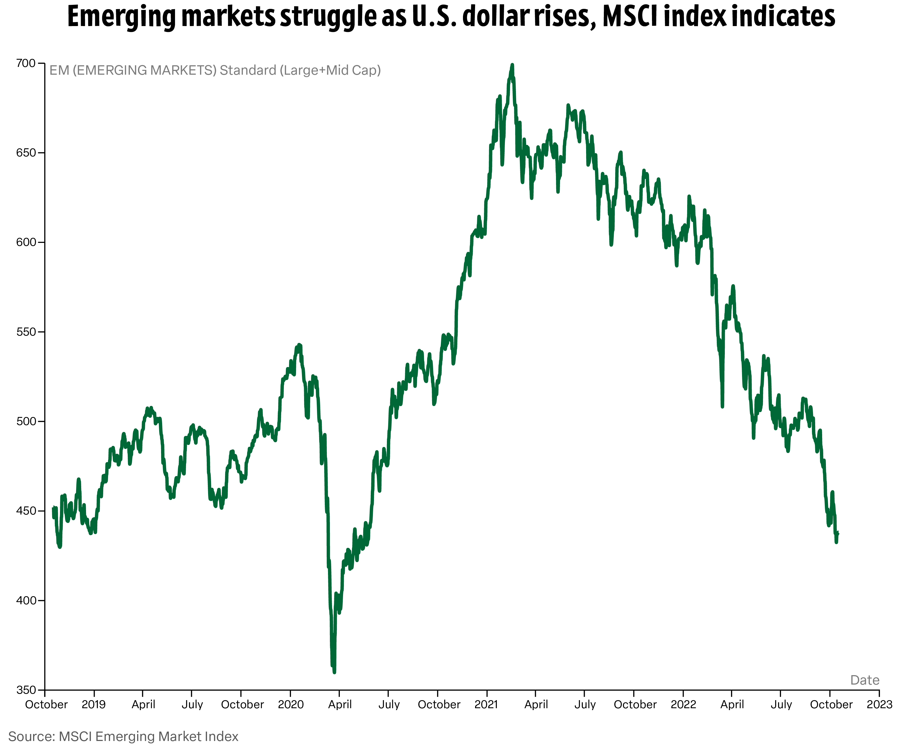

The U.S. dollar is strong right now. Here’s why.
The U.S. dollar is the strongest it’s been in two decades. Why? To help curb inflation, the Federal Reserve hiked up interest rates, and in turn, the U.S. dollar value rose. The effects of this rise can be more easily seen when the dollar is compared to other currencies. For example, the U.S. dollar matched value with the euro this summer for the first time in two decades.
The U.S. Dollar Index (DXY) has increased by 20% since the beginning of the year. This value measures the strength of the U.S. dollar against six foreign currencies. The index was started at a value of 100 in 1973 when it was established, and any movement from there indicates a change in the strength of the U.S. dollar. Therefore, if the chart moves upwards, this means that the U.S. dollar is gaining strength relative to these other currencies.
This chart shows the U.S. Dollar Index value from the beginning of the year to now.
The currencies measured against the U.S Dollar are the Japanese yen, the British pound, the Canadian dollar, the Euro, the Swiss franc and the Swedish krona. The exchange rates of these currencies are shown below, with similar trends to that of the U.S. Dollar Index.
Conversions will use:
As seen in the exchange rates of the six currencies included in the U.S. Dollar Index for this year, the upward trends match that of the U.S. Dollar Index chart.
What does this mean?
1. cheaper imports, expensive exports
Things imported to the U.S. are cheaper. Foreign products make more money for every $1 in sales, which means they can lower their prices in dollars and still make the same profit. This also means that spending your U.S. dollar abroad is cheaper.
On the other side, U.S. exports are now more expensive because of the value the dollar holds, which makes them less appealing to foreign markets.
For example, if you bought a bowl of ramen in Japan in 2021 for 890 yen, it would have cost $7.98. If you bought that same bowl of ramen a year later, it would cost $6.05.
2. Struggling economies abroad
Emerging economies in developing countries borrow dollars to help with imports. With rising dollar value, these debts become increasingly harder to pay back.
Morgan Stanley Capital International (MSCI) has an emerging markets index to help represent the economics of 24 countries with emerging markets around the world. This index represents how these economies are performing.
The chart shows how the index has performed since October 2019. While the index has been falling since 2021, it takes a sharper drop in 2022.
3. U.S. companies are losing revenue
Companies that produce and sell products around the world (e.g., Apple or McDonald’s) will see a loss in revenue as their product makes less abroad.
For example, McDonald’s reported a low second quarter in 2022. The company, which has stores all around the world, is struggling with the value of their product abroad, as well as a rise in costs for food, paper and labor.